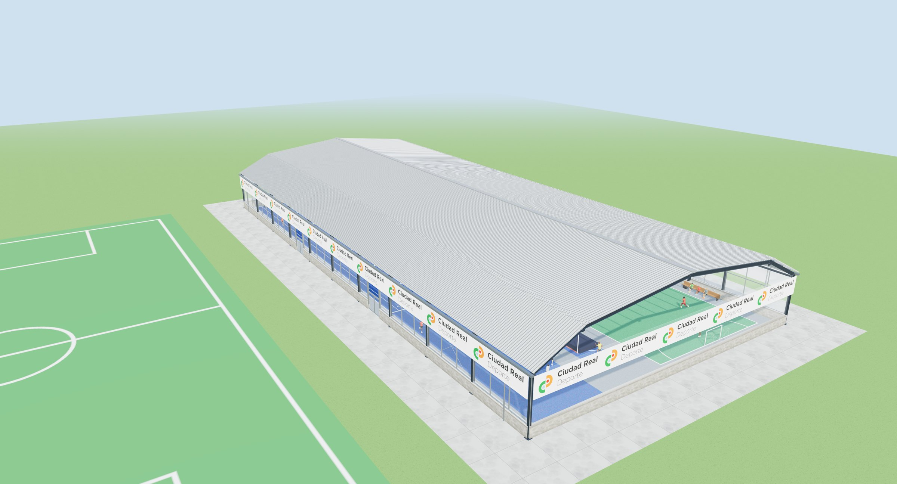
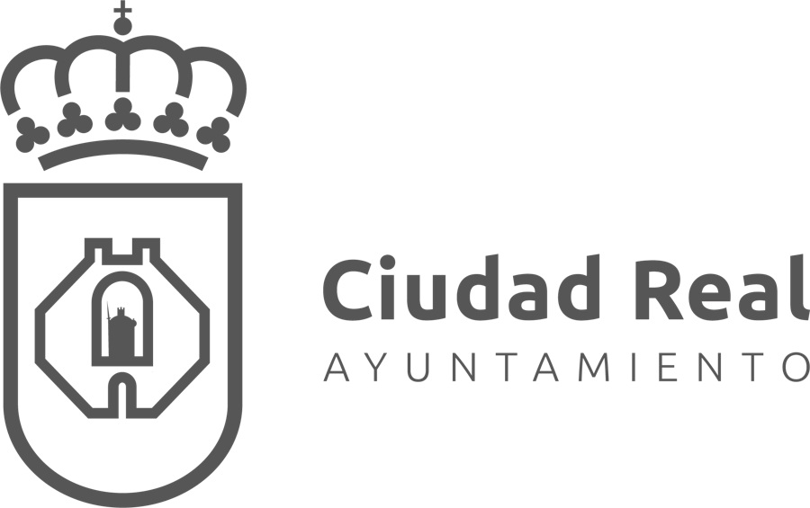
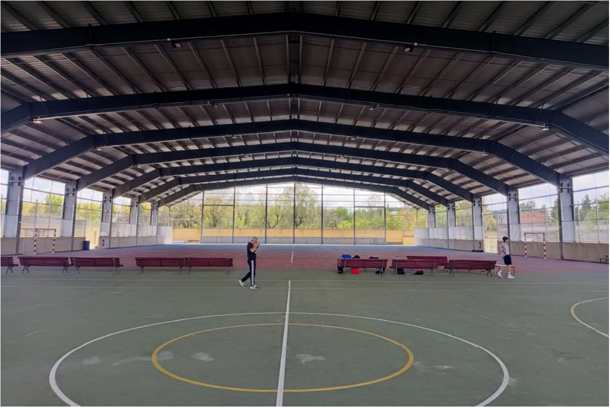
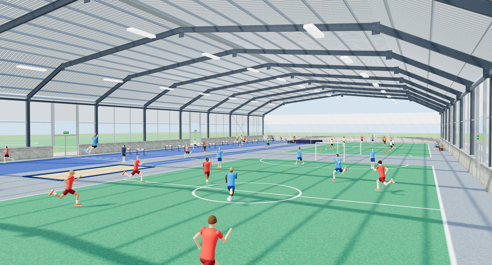
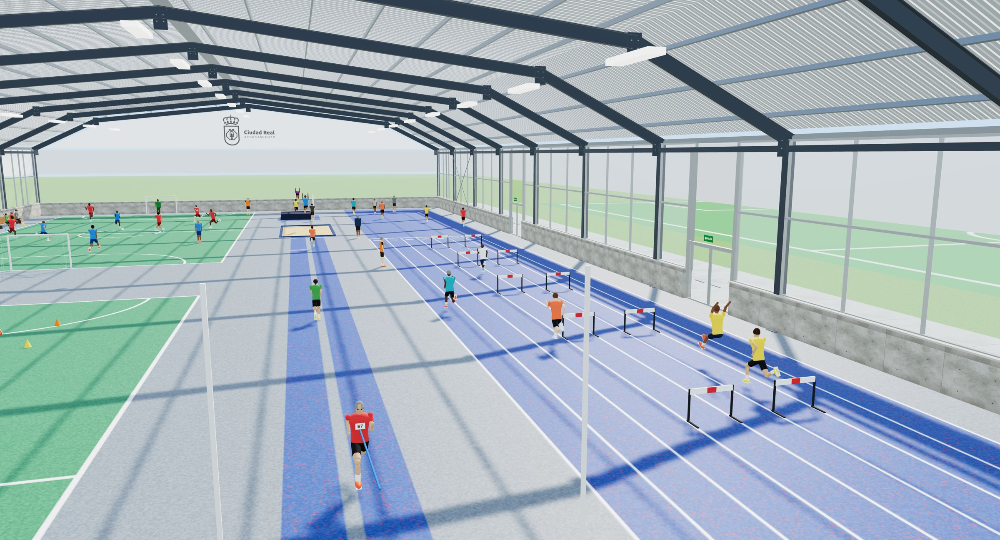
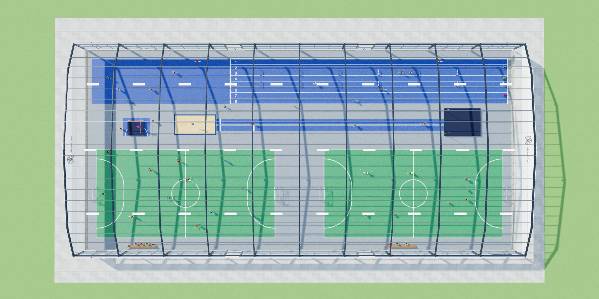
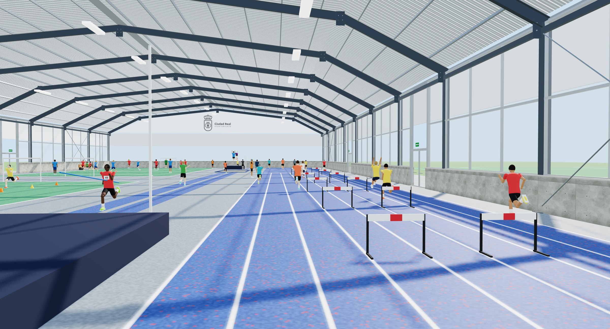
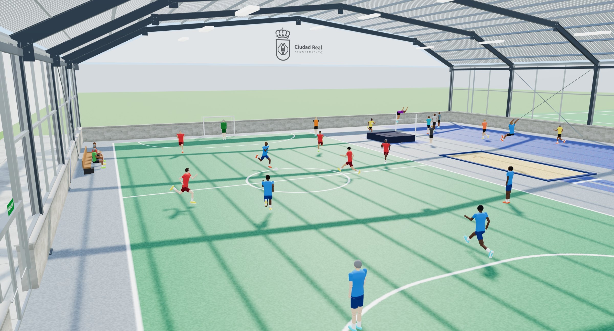
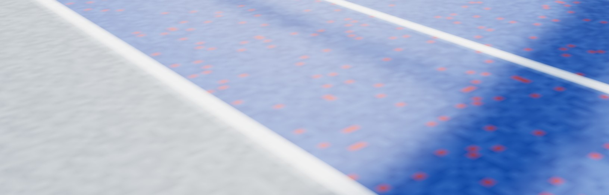
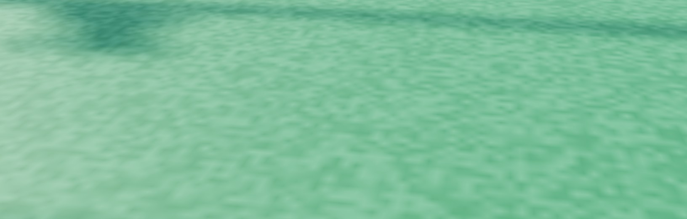

POLIDEPORTIVO JUAN CARLOS I · CIUDAD REAL
Un espacio cubierto para entrenar, competir y crecer todo el año.

PUNTO DE PARTIDA
El Polideportivo Juan Carlos I cuenta con un amplio espacio cubierto. Hoy tiene el pavimento desgastado, una nave abierta a la lluvia, al viento y a las aves, y una sola pista para todos los deportes.
Estado actual de la pista · Polideportivo Juan Carlos I
POR QUÉ ES NECESARIO
El uso continuado y las aves que anidan dentro dañan la superficie de juego.
Lluvia, frío, viento y suciedad entran con facilidad y limitan el uso del espacio.
No hay un lugar cubierto para el atletismo, ni se pueden separar los usos de forma ordenada.
HOY

EL MÓDULO
LA RESPUESTA
2 pistas multideporte
1 módulo de atletismo cubierto
1 nave renovada y protegida


1
Atletismo · 8 calles
2
Zonas de salto
3
Pista multideporte 1
4
Pista multideporte 2
1
2
3
4

EL MÓDULO DE ATLETISMO
8
calles de velocidad
90 m
de pista de velocidad, con zona de frenada
4
zonas de salto: altura, longitud, triple y pértiga
RFEA
módulo homologado por la federación
DOS PISTAS MULTIDEPORTE
Fútbol sala
Baloncesto
Voleibol
Tenis
Cortinas motorizadas separan las pistas entre sí y del atletismo: varios grupos entrenan a la vez, sin molestarse.

LAS SUPERFICIES

ATLETISMO

PISTAS MULTIDEPORTE
SE PUEDE EJECUTAR POR FASES
1 · Módulo de atletismo
→
2 · Pistas multideporte
→
3 · Cubierta y cerramiento
Cada superficie es independiente, así que el orden se puede adaptar. Estimación del proyecto: unos 6 meses en total.
Cubierta renovada. Más aislamiento y menos frío en invierno.
Luz natural. Cerramiento translúcido y control del sol en la fachada oeste.
Espacio protegido. Sin aves, sin lluvia y sin suciedad sobre la pista.
Entorno accesible. Mejor recogida de agua y acceso peatonal desde el exterior.
QUÉ GANA CIUDAD REAL
Un espacio cubierto y versátil para entrenar con cualquier clima.
Calles y zonas de salto para trabajar la técnica durante todo el año.
Módulo de atletismo homologado por la RFEA.
Dos pistas multideporte abiertas a deportistas de todas las edades.
UN MÓDULO PARA CIUDAD REAL
Un espacio para entrenar, tecnificar y competir.